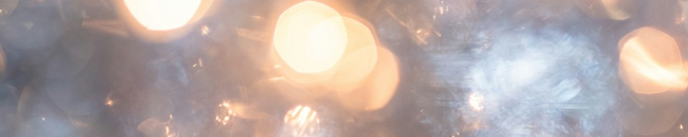
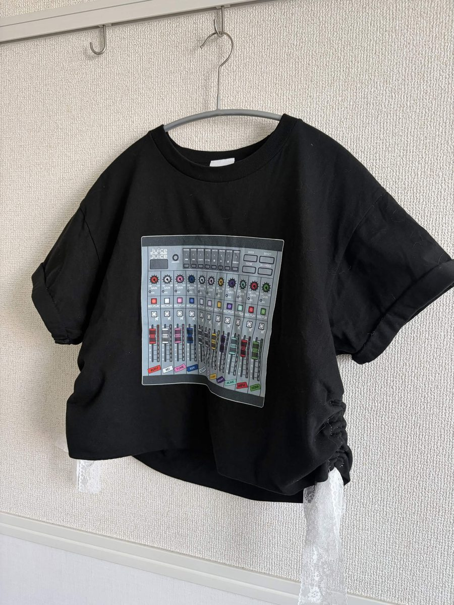

2026年5月の月報です。
「月報」というのは、わたしの中では、メールマガジンみたいな立ち位置にあって。わたしのことを知って下さっている方に、田村は生きていますよ～！ 元気にしていますよ～！ とお知らせするようなものと考えています。だから5月の月報が6月も後半になって出る、というのは、しょうもねえなあ、と鼻白んでいるわけですけど、過ぎた時間を嘆いてもしかたないわね。元気にやっています！
11/8(日)に文学フリマ東京に出ることを決めてから、地道に創作活動を続けています。新刊を2個、既刊（『雑文集 田村真夏』）も持っていきたいと思っています。新刊が2個できるかは諸々の都合しだいなので分かりませんが、とにかく1冊は出そうと思っています！さらに、『雑文集 田村真夏』の電子版リリースもしようと思ってます、本当に、いろんなことに着手しています……！紙の値段が上がるとか、印刷会社が潰れているとか、そういう話も聞きますね。社会のさまざまなことの影響で、11月頃にわたしがどうなっているかも、正直、よくわからない。だけど、その中でもみなさんに手に取ってもらいやすい方法って何なのか、どうしたら理想のものを形にできるのか、模索しています。
そうそう、地味な仕事ですが、公式Webサイトの改修もしました。スマートフォンからの表示が見づらかったのですよね。メニューバーの表示方法を多少変える、みたいなこともしましたね。アクセシビリティ対応はもっとしていきたいと考えていて、新しいテンプレートを作っている最中です。これはリリースがいつになるか分かりませんが、（そして、それをみなさんにお伝えせずにパッと変えることもめちゃくちゃありそうですが、）ちまちまやっております。
小説も時々書いています、今年度一本仕上げて文学賞に出したいけど、どうかなあ。「小説」という媒体について考え耽ることも増えました。小説ってなんなんだろう、どういうことなんだろう、みたいなことを。わたしは嘘か本当か分からない文章が好きなので、「小説」という媒体を借りた嘘を本当っぽく書いていきたいような気がしています。こう書いても意味は伝わらないかもしれないね。
私生活のこともね！
アイドルのJuice=Juiceにハマっています。「女の情念を歌うアイドル」とテレビで言及されていましたが、本当にそのとおりです。湿度が高い曲が多くて大好きです！5月末には、ぴあアリーナMMのライブにも行きました❤️🔥 大学の友人にも会えて楽しかったなあ。
ぴあアリーナMMの日に向けて、自分でライブTシャツをアレンジしていきました。前回の武道館公演の映像を観たら、ライブTシャツをメンバーのみなさんがアレンジして着ていて、それがめちゃくちゃ可愛かったんですよね。真似したくなって、自分でもトライしてみました。丈と袖を短くして、横にレースをつけてくしゅくしゅできるようにしたよ～！

はじめてTシャツのリメイク？ アレンジ？ ってしたんだけど、これってすごく楽しい！ 絶対またやりたいです。布を一から切るより簡単だしね。
というわけで、とても元気にやっています。また再来週くらいには6月の月報が出るでしょう（！）。またお会いできることを楽しみにしています。それじゃあ、またね！